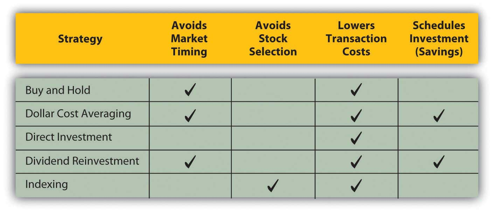

By 1976, computers had been around for decades. They were typically the size of a large room and just as expensive. To use one, you had to learn a programming language. On April 1, 1976, Steve Jobs, Steve Wozniak, and Ron Wayne started a company to make personal computers. On January 3, 1977, Jobs and Wozniak incorporated without Wayne, buying his 10-percent share of the company for $800.Ronald W. Linzmayer, Apple Confidential: The Real Story of Apple Computer, Inc. (San Francisco: No Starch Press, 1999). On December 12, 1980, Apple Computer, Inc., went public; its stock sold for $22 per share.FundingUniverse, “Company Histories: Apple Computer, Inc.,” http://www.fundinguniverse.com/company-histories/Apple-Computer-Inc- Company-History.html (accessed June 9, 2009). Had you bought Apple’s stock when the company went public and held it until today, you would have earned an annual return of about 14.5 percent. To look at it another way, $1,000 invested in Apple shares when they went public would be worth over $50,000 today.Calculations were done by the author, assuming a split-adjusted IPO price of $2.75 per share (http://blogs.indews.com/financial_analysis/apple_financial_analysis.php [accessed June 9, 2009]) and a current stock price of $140 per share (June 2009).
History, as much as it is a litany of wars and rulers struggling for power, is a story of invention and innovation, broadening our understanding of how the world works and, if successful, improving the quality of our lives. Theoretical milestones have to be made practical, however, to be truly effective. The steam engine, the light bulb, the telephone—and the personal computer—had to be produced and sold to be widely used and useful.
Typically, an inventor has a great idea, then teams up with—or becomes—an entrepreneur. The entrepreneur’s job is to build a company that can make the invention a reality. The company needs to find the resources to make the product and sell it widely enough to pay for those resources and to create a profit, making the whole effort worthwhile. No matter how great the idea is, if it can’t be done profitably, it can’t be done.
As an investor, you buy stocks hoping to share in corporate profits, benefiting directly from the inventive vitality of the economy and participating in economic growth. Understanding what stocks are, where they come from, what they do, and how they have value will help you decide how to include stocks in your investment portfolio and how to use them to reach your investment goals.
Resources have costs, so a company needs money, or capital, which is also a resource. To get that start-up capital, the company could borrow or it could offer a share of ownership, or equity, to those who chip in capital.
If the costs of debt (interest payments) are affordable, the company may choose to borrow, which limits the company’s commitment to its capital contributor. When the loan matures and is paid off, the relationship is over.
If the costs of debt are too high, however, or the company is unable to borrow, it seeks equity investors willing to contribute capital in exchange for an unspecified share of the company’s profits at some time in the future. In exchange for taking the risk of no exact return on their investment, equity investors get a say in how the company is run.
Stock represents those shares in the company’s future and the right to a say in how the company is run. The original owners—the inventor(s) and entrepreneur(s)—choose equity investors who share their ideals and vision for the company. Usually, the first equity investors are friends, family, or colleagues, allowing the original owners freedom of management. At that point, the corporation is privately held, and the company’s stock may be traded privately between owners. There may be restrictions on selling the stock, often the case for a family business, so that control stays within the family.
If successful, however, eventually the company needs more capital to grow and remain competitive. If debt is not desirable, then the company issues more equity, or stock, to raise capital. The company may seek out an angel investorAn individual or group providing equity financing; usually a wealthy individual., venture capitalPrivate equity provided to facilitate excessive growth before the initial public offering of shares. firm, or private equityEquity not traded in a public market or exchange. firm. Such investors finance companies in the early stages in exchange for a large ownership and management stake in the company. Their strategy is to buy a significant stake when the company is still “private” and then realize a large gain, typically when the company goes public. The company also may seek a buyer, perhaps a competitive or complementary business.
Alternatively, the company may choose to go publicTo raise capital by issuing equity shares through a public exchange., to sell shares of ownership to investors in the public markets. Theoretically, this means sharing control with random strangers because anyone can purchase shares traded in the stock market. It may even mean losing control of the company. Founders can be fired, as Steve Jobs was from Apple in 1985 (although he returned as CEO in 1996).
Going public requires a profound shift in the corporate structure and management. Once a company is publicly traded, it falls under the regulatory scrutiny of federal and state governments, and must regularly file financial reports and analysis. It must broaden participation on the board of directors and allow more oversight of management. Companies go public to raise large amounts of capital to expand products, operations, markets, or to improve or create competitive advantages. To raise public equity capital, companies need to sell stock, and to sell stock they need a market. That’s where the stock markets come in.
The private corporation’s board of directors, shareholders elected by the shareholders, must authorize the number of shares that can be issued. Since issuing shares means opening up the company to more owners, or sharing it more, only the existing owners have the authority to do so. Usually, it authorizes more shares than it intends to issue, so it has the option of issuing more as need be.
Those authorized sharesShares of common or preferred stock that have been authorized for issuance by a corporation’s board of directors. are then issued through an initial public offering (IPO)A company’s first issuance of stock for trade in the public markets. Companies issue stock publicly to attract more investors and thus more capital for the company. When a company has its IPO is it said to “go public.”. At that point the company goes public. The IPO is a primary marketThe market in which the initial issuance or initial public offering of a stock occurs. transaction, which occurs when the stock is initially sold and the proceeds go to the company issuing the stock. After that, the company is publicly traded; its stock is outstanding, or publicly available. Then, whenever the stock changes hands, it is a secondary marketA market in which outstanding shares are traded. transaction. The owner of the stock may sell shares and realize the proceeds. When most people think of “the stock market,” they are thinking of the secondary markets.
The existence of secondary markets makes the stock a liquid or tradable asset, which reduces its risk for both the issuing company and the investor buying it. The investor is giving up capital in exchange for a share of the company’s profit, with the risk that there will be no profit or not enough to compensate for the opportunity cost of sacrificing the capital. The secondary markets reduce that risk to the shareholder because the stock can be resold, allowing the shareholder to recover at least some of the invested capital and to make new choices with it.
Meanwhile, the company issuing the stock must pay the investor for assuming some of its risk. The less that risk is, because of the liquidity provided by the secondary markets, the less the company has to pay. The secondary markets decrease the company’s cost of equity capital.
A company hires an investment bank to manage its initial public offering of stock. For efficiency, the bank usually sells the IPO stock to institutional investors. Usually, the original owners of the corporation keep large amounts of stock as well.
What does this mean for individual investors? Some investors believe that after an initial public offering of stock, the share price will rise because the investment bank will have initially underpriced the stock in order to sell it. This is not always the case, however. Share price is typically more volatile after an initial public offering than it is after the shares have been outstanding for a while. The longer the company has been public, the more information is known about the company, and the more predictable its earnings are and thus share price.M. B. Lowery, M. S. Officer, and G. W. Schwert, “The Variability of IPO Initial Returns,” Journal of Finance, http://schwert.ssb.rochester.edu/ipovolatility.htm (accessed June 9, 2009).
When a company goes public, it may issue a relatively small number of shares. Its market capitalizationThe total market value of a corporation’s capital.—the total dollar value of its outstanding shares—may therefore be small. The number of individual shareholders, mostly institutional investors and the original owners, also may be small. As a result, the shares may be “thinly traded,” traded infrequently or in small amounts.
Thinly traded shares may add to the volatility of the share price. One large shareholder deciding to sell could cause a decrease in the stock price, for example, whereas for a company with many shares and shareholders, the actions of any one shareholder would not be significant. As always, diversification—in this case of shareholders—decreases risk. Thinly traded shares are less liquid and more risky than shares that trade more frequently.
A company may issue common stockEquity shares representing the residual claim on the company’s value. or preferred stockEquity shares that represent a superior claim over common shares but typically do not confer voting rights.. Common stock is more prevalent. All companies issue common stock, whereas not all issue preferred stock. The differences between common and preferred have to do with the investor’s voting rights, risk, and dividends.
Common stock allows each shareholder voting rights—one vote for each share owned. The more shares you own, the more you can influence the company’s management. Shareholders vote for the company’s directors, who provide policy guidance for and hire the management team that directly operates the corporation. After several corporate scandals in the early twenty-first century, some shareholders have become more active in their voting role.
Common stockholders assume the most risk of any corporate investor. If the company encounters financial distress, its first responsibility is to satisfy creditors, then the preferred shareholders, and then the common shareholders. Thus, common stocks provide only residual claims on the value of the company. In the event of bankruptcy, in other words, common shareholders get only the residue—whatever is left after all other claimants have been compensated.
Common shareholders share the company’s profit after interest has been paid to creditors and a specified share of the profit has been paid to preferred shareholders. Common shareholders may receive all or part of the profit in cash—the dividend. The company is under no obligation to pay common stock dividends, however. The management may decide that the profit is better used to expand the company, to invest in new products or technologies, or to grow by acquiring a competitor. As a result, the company may pay a cash dividend only in certain years or not at all.
Shareholders investing in preferred stock, on the other hand, give up voting rights but get less risk and more dividends. Preferred stock typically does not convey voting rights to the shareholder. It is often distributed to the “friends and family” of the original founders when the company goes public, allowing them to share in the company’s profits without having a say in its management. As noted above, preferred shareholders have a superior claim on the company’s assets in the event of bankruptcy. They get their original investment back before common shareholders but after creditors.
Preferred dividends are more of an obligation than common dividends. Most preferred shares are issued with a fixed dividend as cumulative preferred sharesPreferred shares that obligate the company to pay dividends to preferred shareholders before paying any others.. This means that if the company does not create enough profit to pay its preferred dividends, those dividends ultimately must be paid before any common stock dividend.
For the individual investor, preferred stock may have two additional advantages over common stock:
As the company goes through its ups and downs, the preferred stock price will fluctuate less than the common stock price. If the company does poorly, preferred stockholders are more likely to be able to recoup more of their original investment than common shareholders because of their superior claim. If the company does well, however, preferred stockholders are less likely to share more in its success because their dividend is fixed. Preferred shareholders thus are exposed to less risk, protected by their superior claim and fixed dividend. The preferred stock price reflects less of the company’s volatility.
Because the preferred dividend is more of an obligation than the common dividend, it provides more predictable dividend income for shareholders. This makes the preferred stock less risky and attractive to an investor looking for less volatility and more regular dividend income.
Figure 15.3 "Stock Comparisons" summarizes the differences between common stock and preferred stock.
Figure 15.3 Stock Comparisons

As an investment choice, preferred stock is more comparable to bonds than to common stock. Bonds also offer less volatility and more reliable income than common stock (see Chapter 16 "Owning Bonds"). If there is a difference in the tax rate between dividend income (from preferred stock) and interest income (from bonds), you may find a tax advantage to investing in preferred stock instead of bonds.
Corporations often issue and trade their stocks on exchanges or in markets outside their home country, especially if the foreign market has more liquidity and will attract more buyers. Many foreign corporations issue and trade stock on the New York Stock Exchange (NYSE) or on the National Association of Securities Dealers Automated Quotations (NASDAQ), for example.
Investing in foreign shares is complicated by the fact that stock represents ownership, a legal as well as an economic idea, and because foreign companies operate in foreign currencies. To get around those issues and make foreign shares more tradable, the American Depository Receipt (ADR)An asset representing equity shares in a foreign corporation trading in U.S. markets. was created in 1927. U.S. banks buy large amounts of shares in a foreign company and then sell ADRs (each representing a specified number of those shares) to U.S. investors. Individual shares of the stock are called American Depository Shares, or ADSs.
The ADR is usually listed on a major U.S. stock exchange, such as the New York Stock Exchange, or is quoted on the NASDAQ. One ADR can represent more or less than one share of the foreign stock, depending on its price and the currency exchange rate, so that the bank issuing the ADR can “price” it according to the norms of U.S. stock markets.
ADRs lower transaction costs for U.S. investors investing in foreign corporations. Because they are denominated in U.S. dollars, they lower exchange rate or currency risk for U.S. investors. They also lower your usual risks with investing overseas, such as lack of information and too much or too little regulatory oversight.
In return for marketing their shares in the lucrative U.S. market, foreign companies must provide U.S. banks with detailed financial reports. This puts available foreign corporate information on par with that of U.S. companies. Because they are issued and sold in the United States on U.S. exchanges, ADRs fall under the regulatory control of the Securities and Exchange Commission (SEC) and other federal and state regulatory agencies, which also lowers your risk.
Equity securities may be common or preferred stock, differing by
The value of a stock is in its ability to create a return, to create income or a gain in value for the investor. With common stock, the income is in the form of a dividend, which the company is not obligated to pay. The potential gain is determined by estimations of the future value of the stock.
If you knew that the future value would likely be more than the current market price—over your transaction costs, tax consequences, and opportunity cost—then you would buy the stock.
If you thought the future value would be less, you would short the stock (borrow it to sell with the intent of buying it back when its price falls), or you would just look for another investment.
Every investor wants to know what a stock will be worth, which is why so many stock analysts spend so much time estimating future value. Equity analysis is the process of gathering as much information as possible and making the most educated guesses.
Corporations exist to make profit for the owners. The better a corporation is at doing that, the more valuable it is, and the more valuable are its shares. A company also needs to increase earnings, or grow, because the global economy is competitive. A corporation’s future value depends on its ability to create and grow earnings.
That ability depends on many factors. Some factors are company-specific, some are specific to the industry or sector, and some are macroeconomic forces. Chapter 12 "Investing" discussed these factors in terms of the risk that a stock creates for the investor. The risk is that the company will not be able to earn the expected profit.
A company’s size is an indicator of its earnings and growth potential. Size may correlate with age. A large company typically is more mature than a smaller one, for example. A larger company may have achieved economies of scale or may have gotten large by eliminating competitors or dominating its market. Size in itself is not an indicator of success, but similarly sized companies tend to have similar earnings growth.E. F. Fama and K. R. French, “The Cross-section of Expected Stock Returns,” Journal of Finance 47 (1992): 427–86.
Companies are usually referred to by the size of their market capitalization or market cap, that is, the current market value of the debt and equity they use to finance their assets. Common market cap categories are the sizes micro, small, mid (medium), and large, or
The market capitalization of a company—along with industry and economic indicators—is a valuable indicator of earnings potential.
The economist John Maynard Keynes (1883–1946) famously compared the securities markets with a newspaper beauty contest. You “won” not because you could pick the prettiest contestant, but because you could pick the contestant that everyone else would pick as the prettiest contestant. In other words, the stock market is a popularity contest, but the “best” stock was not necessarily the most popular.
Keynes described investing in the stock market as follows:
“The smart player recognizes that personal criteria of beauty are irrelevant in determining the contest winner. A better strategy is to select those faces the other players are likely to fancy. This logic tends to snowball. After all, the other participants are likely to play the game with at least as keen a perception. Thus, the optimal strategy is not to pick those faces the player thinks are prettiest, or those the other players are likely to fancy, but rather to predict what the average opinion is likely to be about what the average opinion will be.”Burton G. Malkiel, A Random Walk Down Wall Street (New York: W. W. Norton & Company, Inc., 2007).
In the stock market, the forces of supply and demand determine stock prices. The more demand or popularity there is for a company’s stock, the higher its price will go (unless the company issues more shares). A stock is popular, and thus in greater demand, if it is thought to be more valuable—that is, if it has more earnings and growth potential.
Sometimes a company is under- or overpriced relative to the going price for similar companies. If the market recognizes the “error,” the stock price should rise or fall as it “corrects” itself.
A growth stockA stock that is expected to offer excessive rates of growth. is a stock that promises a higher rate of return because the market has underestimated its growth potential. A value stockA stock whose return is based on its current underpricing by the market. is a stock that has been underpriced for some other reason. For example, investors may be wary of the outlook for its industry. Because it is underpriced, a value stock is expected to provide a higher-than-average return.
Stocks may be characterized by the role that they play in a diversified portfolio—and some by their colorful names—as shown in Table 15.1 "Definitions of Stocks and their Roles in a Portfolio".
Table 15.1 Definitions of Stocks and their Roles in a Portfolio
| Definition | Role | |
|---|---|---|
| Growth stock | Underestimated potential for growth. | Expect a higher rate of return. |
| Value stock | Undervalued by the market; underpriced. | Expect a higher-than-average return. |
| Defensive stockA stock with very little volatility that is relatively insensitive to market moves. | Less volatility than the overall market and less sensitive to market changes. | Expect the value to fall less than the market’s during a market decline. |
| Cyclical stockA stock that will move with the market but with more volatility. | More volatility than the overall market and more sensitive to market changes. | When the market rises, expect the price to rise at a higher rate. When the market falls, expect the price to fall at a higher rate. |
| Speculative stockA stock promising excessive value that may already be overvalued. | Overvalued by the market; overpriced. | Expect the price to continue rising for a time before it falls. |
| Blue chip stockStock of a corporation with a history of providing steady returns. | Stock of a stable, well-established, large cap company. | Expect stable returns. |
| Widow-and-orphan stockA blue chip stock that offers a reliable dividend. | A blue chip defensive stock. | Expect a steady dividend. |
| Wallflower stockA stock whose value is overlooked by the market. | Overlooked and therefore underpriced. | Expect the value to rise when the stock is “discovered.” |
| Penny stockThe stock of a corporation with low market capitalization; the stock has a low price (usually less than one dollar) and high volatility. | Low-priced stock of a small or micro cap company. | Expect the value to rise if and when the company succeeds. |
Each term in Table 15.1 "Definitions of Stocks and their Roles in a Portfolio" names a stock’s relationship to the market and to investors. For example, an investor who wants to invest in stocks but wants to minimize economic risk would include defensive stocks such as Boeing (a large military contractor) in the stock portfolio along with some blue chips, such as Coca Cola or Proctor and Gamble. Implicit is its potential for price growth, risk, or role in a diversified portfolio.
Stocks can be characterized by their expected behavior relative to the market as
A corporation creates a return for investors by creating earnings. Those earnings may be paid out in cash as a dividend or retained as capital by the company. A company’s ability to create earnings is watched closely by investors because the company’s earnings are the investor’s return.
A company’s earnings potential can be tracked and measured, and several measurements are expressed as ratios. Mathematically, as discussed in Chapter 3 "Financial Statements", a ratio is simply a fraction. In investment analysis, a ratio provides a clear means of comparing values. Three kinds of ratios important to investors are return ratios, growth ratios, and market value ratios.
The ratios described here are commonly presented in news outlets and Web sites where stocks are discussed (e.g., http://www.nasdaq.com), so chances are you won’t have to calculate them yourself. Nevertheless, it is important to understand what they mean and how to use them in your investment thinking.
One of the most useful ratios in looking at stocks is the earnings per share (EPS)The dollar value of the earnings per each share of common stock. ratio. It calculates the company’s earnings, the portion of a company’s profit allocated to each outstanding share of common stock. The calculation lets you see how much you benefit from holding each share. Here is the formula for calculating EPS:
EPS = (net income − preferred stock dividends) ÷ average number of common shares outstandingThe company’s earnings are reported on its income statement as net income, so a shareholder could easily track earnings growth. However, EPS allows you to make a direct comparison to other stocks by putting the earnings on a per-share basis, creating a common denominator. Earnings per share should be compared over time and also compared to the EPS of other companies.
When a stock pays a dividend, that dividend is income for the shareholder. Investors concerned with the cash flows provided by an equity investment look at dividends per shareThe dollar value of the dividend return to each share of stock. or DPS as a measure of the company’s ability and willingness to pay a dividend.
DPS = common stock dividends ÷ average number of common shares outstandingAnother measure of the stock’s usefulness in providing dividends is the dividend yieldThe return provided by the dividend relative to the share price, or the dividend per each dollar of investment, given its market price., which calculates the dividend as a percentage of the stock price. It is a measure of the dividend’s role as a return on investment: for every dollar invested in the stock, how much is returned as a dividend, or actual cash payback? An investor concerned about cash flow returns can compare companies’ dividend yields.
dividend yield = dividend per share (in dollars) ÷ price per share (in dollars)For example, Microsoft, Inc., has a share price of around $24, pays an annual dividend of $4.68 billion, and has about nine billion shares outstanding; for the past year, it shows earnings of $15.3 billion.NASDAQ, http://quotes.nasdaq.com/asp/SummaryQuote.asp?symbol=MSFT& selected=MSFT (accessed July 29, 2009). Assuming it has not issued preferred stock and so pays no preferred stock dividends,
EPS = 15.3 billion/9 billion = $1.70 DPS = 4.68 billion/9 billion = $0.52 dividend yield = 0.52/24 = 2.1667%Microsoft earned $15.3 billion, or $1.70 for each share of stock held by stockholders, from which $0.52 is actually paid out to shareholders. So if you buy a share of Microsoft by investing $24, the cash return provided to you by the company’s dividend is 2.1667 percent.
Earnings are either paid out as dividends or are retained by the company as capital. That capital is used by the company to finance operations, capital investments such as new assets for expansion and growth or repayment of debt.
The dividend is the return on investment that comes as cash while you own the stock. Some investors see the dividend as a more valuable form of return than the earnings that are retained as capital by the company. It is more liquid, since it comes in cash and comes sooner than the gain that may be realized when the stock is sold (more valuable because time affects value). It is the “bird in the hand,” perhaps less risky than waiting for the eventual gain from the company’s retained earningsThe portion of the company’s earnings or net income that is not distributed (paid out) to owners as a dividend, but is retained as equity financing for the company..
Some investors see a high dividend as a sign of the company’s strength, indicative of its ability to raise ample capital through earnings. Dividends are a sign that the company can earn more capital than it needs to finance operations, make capital investments, or repay debt. Thus, dividends are capital that can be spared from use by the company and given back to investors.
Other investors see a high dividend as a sign of weakness, indicative of a company that cannot grow because it is not putting enough capital into expansion and growth or into satisfying creditors. This may be because it is a mature company operating in saturated markets, a company stifled by competition, or a company without the creative resources to explore new ventures.
As an investor, you need to look at dividends in the context of the company and your own income needs.
The more earnings are paid out to shareholders as dividends, the less earnings are retained by the company as capital.
earnings = dividends + capital retainedSince retained capital finances growth, the more earnings are used to pay dividends, the less earnings are used to create growth. Two ratios that measure a company’s choice in handling its earnings are the dividend payout rate and the retention rate. The dividend payout rateThe percentage of earnings that is paid out as a dividend. compares dividends to earnings. The retention rateThe rate at which a company retains earnings for use as additional capital or the earnings retained (not paid out as dividends) as a percentage of earnings. compares the amount of capital retained to earnings.
The dividend payout rate figures the dividend as a percentage of earnings.
dividend payout rate = dividends ÷ earningsThe retention rate figures the retained capital as a percentage of earnings.
retention rate = capital retained ÷ earningsBecause earnings = dividends + capital retained, then
100% of earnings = dividend payout + retention rate.If a company’s dividend payout rate is 40 percent, then its retention rate is 60 percent; if it pays out 40 percent of its earnings in dividends, then it retains 60 percent of them.
Since Microsoft has earnings of $15.3 billion and dividends of $4.68 billion, it must retain $10.62 billion of its earnings. So, for Microsoft,
dividend payout rate = 4.68 billion/15.3 billion = 30.59% retention rate = 10.62 billion/15.3 billion = 69.41%.There is no benchmark dividend payout or retention ratio for every company; they vary depending on the age and size of the company, industry, and economic climate. These numbers are useful, however, to get a sense of the company’s strategy and to compare it to competitors.
A company’s value is in its ability to grow and to increase earnings. The rate at which it can retain capital, earn it and not pay it out as dividends, is a factor in determining how fast it can grow. This rate is measured by the internal growth rateThe maximum rate of growth achieved without any issuance of debt or new equity capital. and the sustainable growth rate. The internal growth rate answers the question, “How fast could the company grow (increase earnings) without any new capital, without borrowing or issuing more stock?” Given how good the company is at taking capital and turning it into assets and using those assets to create earnings, the internal growth rate looks at how fast the company can grow without any new borrowing or new shares issued.
The sustainable growthThe maximum rate of growth possible without changing the use of debt and equity capital. rate answers the question, “How fast could the company grow without changing the balance between using debt and using equity for capital?” Given how good the company is at taking capital and turning it into assets and using those assets to create earnings, the sustainable growth rate looks at how fast the company can grow if it uses some new borrowing, but keeps the balance between debt and equity capital stable.
Both growth rates use the retention rate as a factor in allowing growth. The fastest rate of growth could be achieved by having a 100 percent retention rate, that is, by paying no dividends and retaining all earnings as capital.
An investor who is not using stocks as a source of income but for their potential gain may look for higher growth rates (evidenced by a higher retention rate and a lower dividend payout rate). An investor looking for income from stocks would instead be attracted to companies offering a higher dividend payout rate and a lower retention rate (despite lower growth rates).
While return and growth ratios are measures of a company’s fundamental value, and therefore the value of its stocks, the actual stock price is affected by the market. Investors’ demand can result in underpricing or overpricing of a stock, depending on its attractiveness in relation to other investment choices or opportunity cost.
A stock’s market value can be compared with that of other stocks. The most common measure for doing so is the price-to-earnings ratioThe ratio of a stock’s market value per share to its earnings per share, or the market value of one dollar of the company’s earnings., or P/E. Price-to-earnings ratio is calculated by dividing the price per share (in dollars) by the earnings per share (in dollars). The result shows the investment needed for every dollar of return that the stock creates.
P/E = price per share ÷ earnings per shareFor Microsoft, for example, the price per share is around $24, and the EPS is $1.70, so the P/E = 24.00/1.70 = $14.12. This means that the price per share is around fourteen times bigger than the earnings per share.
The larger the P/E ratio, the more expensive the stock is and the more you have to invest to get one dollar’s worth of earnings in return. To get $1.00 of Microsoft’s earnings, you have to invest around $14. By comparing the P/E ratio of different companies, you can see how expensive they are relative to each other.
A low P/E ratio could be a sign of weakness. Perhaps the company has problems that make it riskier going forward, even if it has earnings now, so the future expectations and thus the price of the stock is now low. Or it could be a sign of a buying opportunity for a stock that is currently underpriced.
A high P/E ratio could be a sign of a company with great prospects for growth and so a higher price than would be indicted by its earnings alone. On the other hand, a high P/E could indicate a stock that is overpriced and has nowhere to go but down. In that case, a high P/E ratio would be a signal to sell your stock.
How do you know if the P/E ratio is “high” or “low”? You can compare it to other companies in the same industry or to the average P/E ratio for a stock index of similar type companies based on company size, age, debt levels, and so on. As with any of the ratios discussed here, this one is useful in comparison.
Another indicator of market value is the price-to-book ratio (P/B)A ratio comparing the market value of the company to its book or “original” value.. Price-to-book ratio compares the price per share to the book value of each share. The book valueThe valuation of assets, liabilities, and equity from the balance sheet; the corporation’s original investment in its assets, liabilities, and equity. is the value of the company that is reported “on the books,” or the company’s balance sheet, using the intrinsic or original values of assets, liabilities, and equity. The balance sheet does not show the market value of the company’s assets, for example, not what they could be sold for today; it shows what they were worth when the company acquired them. The book value of a company should be less than its market value, which should have appreciated over time. The company should be worth more as times goes on.
P/B = price per share ÷ book value of equity per shareSince the price per share is the market value of equity per share, the P/B ratio compares the current market value of the company’s equity to its book value. If that ratio is greater than one, then the company’s equity is worth more than its original value, and the company has been increasing its value. If that ratio is less than one, then the company’s current value is less than its original value, so the value has been decreasing. A P/B of one would indicate that a company has just been breaking even in terms of value over the years.
The higher the P/B ratio, the better the company has done in increasing its value over time. You can calculate the ratio for different companies and compare them by their ability to increase value.
Figure 15.5 "Ratios and Their Uses" provides a summary of the return, growth, and market value ratios.
Figure 15.5 Ratios and Their Uses

Ratios can be used to compare a company with its past performance, with its competitors, or with competitive investments. They can be used to project a stock’s future value based on the company’s ability to earn, grow, and be a popular investment. A company has to have fundamental value to be an investment choice, but it also has to have market value to have its fundamental value appreciated in the market and to have its price reflect its fundamental value.
To go back to Keynes’s analogy: it may take beauty to win a beauty contest, but beauty has to shine through to be appreciated by a majority of the judges. And beauty, as you know, is in the eye of the beholder.
The best stock strategy is to know what you are looking for (i.e., what kind of stock will fulfill the role you want it to play in your portfolio) and to do the analyses you need to find it. That is easier said than done, however, and requires that you have the knowledge, skill, and data for stock analysis. Commonly used general stock strategies may be long term (returns achieved in more than one year) or short term (returns achieved in less than one year), but the strategies you choose should fit your investing horizon, risk tolerance, and needs. An important part of that strategy, as with financial planning in general, is to check your stock investments and reevaluate your holdings regularly. How regularly depends on to long- or short-term horizon of your investing strategies.
Long-term strategies favor choosing a long-term approach to avoid the volatility and risk of market timing. For individual investors, a buy-and-hold strategyThe long-term strategy of investing and holding without trading. can be effective over the long run. The strategy is just what it sounds like: you choose the stocks for your equity investments, and you hold them for the long term. The idea is that if you choose wisely and your stocks are well diversified, over time you will do at least as well as the stock market itself. Though it suffers through economic cycles, the economy’s long-term trend is growth.
By minimizing the number of transactions, you can minimize transaction costs. Since you are holding your stocks, you are not realizing gains and are not paying gains tax. Thus, even if your gross returns are not spectacular, you are minimizing your costs and maximizing net returns. This strategy is optimal for investors with a long horizon, low risk tolerance, and little need for liquidity in the short term.
Another long-term strategy is dollar-cost averagingThe strategy of investing regular dollar amounts at regular intervals in one security.. The idea of dollar-cost averaging is that you invest in a stock gradually by buying the same dollar amount of the same stock at regular intervals. This is a way of negating the effects of market timing. By buying at regular intervals, you will buy at times when the price is low and when it is high, but over time your price will average out. Dollar-cost averaging is a way of avoiding a stock’s price volatility because the net effect is that you buy the stock at its average price.
An investor uses dollar-cost averaging when regular payroll deductions are made to fund defined contribution retirement plans, such as a 401(k) or a 403b. The same amount is contributed to the plan in regular intervals and is typically used to purchase the same set of specified assets.
A buy-and-hold or dollar-cost averaging strategy only makes sense over time because both assume a long time horizon in order to “average out” volatility, making them better than other investment choices. If you have a long-term horizon, as with a retirement plan, those strategies can be quite effective. However, as the most recent decade has shown, market or economic cycles can be long too, so you need to think about whether your “long-term” horizon is likely to outlast or be outlasted by the market’s cycle, especially as you near your investment goals.
Direct investment and dividend reinvestment are ways of buying shares directly from a company without going through a broker. This allows you to avoid brokerage commissions. Direct investmentA real estate investment in which you are the owner and manager of property. means purchasing shares from the company, while dividend reinvestmentThe practice of using dividends to automatically purchase additional shares. means having your dividends automatically invested in more shares (rather than being sent to you as cash). Dividend reinvestment is also a way of building up your equity in the stock by reinvesting cash that you might otherwise spend.
The advantage of direct investment and dividend reinvestment is primarily the savings on brokers’ commissions. You can also buy fractional shares or less than a whole share, and there is no minimum amount to invest, as there can be with brokerage transactions. The disadvantage is that by having funds automatically reinvested, you are not actively deciding how they should be invested and thus may be missing better opportunities.
IndexingThe strategy of using index funds to achieve diversification rather than specifically selecting individual securities. is a passive long-term investment strategy to invest in index funds as a diversified asset rather than select stocks. Instead of choosing individual large cap companies, for example, you could invest in Standard & Poor’s (S&P) 500 Index fund, which would provide more diversification for only one transaction cost than you could get picking individual securities. The disadvantage to indexing is that you do not enjoy the potential of individual stocks producing above-average returns.
Figure 15.7 "Long-Term Stock Strategies" summarizes long-term stock strategies.
Figure 15.7 Long-Term Stock Strategies
Short-term stock strategies rely on taking advantage of market timing to earn above-average returns. Some advisors believe that the stock market fluctuates between favoring value stocks and favoring growth stocks. That is, the market will go through cycles when value stocks that are temporarily underpriced will outperform stocks of companies poised for higher growth, and vice versa. If true, you would want to weight your portfolio with growth stocks when they are favored and with value stocks when they are favored.
This value-growth weighting strategy relies on market timing, which is difficult for the individual investor. It also relies on correctly identifying growth and value stocks and market trends in their favor, complicating the process of market timing even further.
Day tradingA short-term strategy for taking advantage of excessive volatility. is a very short-term strategy of taking and closing a position in a day or two. Literally, it means buying in the morning and selling in the afternoon. Day trading became popular in the 1990s when stock prices were riding the tide of the tech stock bubble. At that time it was possible to hold a stock for just a few hours and earn a gain. Technology, especially the Internet, also made real-time quotes and other market data available to individual investors at a reasonable cost. At the same time, Internet and discount brokers drove down the costs of trading.
Day trading declined, but did not die, after the tech bubble burst. It turns out that in a bubble, any strategy can make money, but when market volatility is more closely related to earnings potential and fundamental value, there iis no shortcut to doing your homework, knowing as much as possible about your investments, and making appropriate strategic choices for you.
Common long-term strategies try to maximize returns by